| 候选代码 | 服务端与 CLI：718ab9be6a（父交付线 agent/delivery/dene-1659，/health 报 commit 718ab9be6a）。页面：718ab9be6a + 本票 500bb9cb78（最近沉淀的文件另起一行完整换行）。 |
|---|---|
| 环境 | 本票 worktree 的管理环境 dene_1670_b7a894d98087-784，经 make worktree-env + make up C=api,web 启动：API localhost:18864（pid 58750）、Web localhost:13784（pid 58950，next dev，cwd 为本 worktree 的 apps/web），独立库 multica_dene_1670_b7a894d98087_784。make status 把 web 标成 mismatch，但监听进程就是 make up 起的 58950。 |
| CLI | 从候选源码编出的 multica，清空全部 MULTICA_*、HOME 指向临时目录，只连本地候选服务（scripts/m.sh）。身份是本地 dev 用户（验证码登录）。 |
| 测试数据 | 新建工作区「沉淀验收」(SED)、项目「沉淀验收项目」；测试 git 仓库都在临时目录（本地仓库 + 一个裸仓库当远端），没有碰 ai100 / tarot。 |
| 直接写库的部分 | 只有夹具：一个运行时、一个智能体、三条聊天会话（worktree 里起不了 daemon，聊天没法真开）；另把 dev 用户标为已完成引导。所有沉淀记录都由 CLI → 服务端写入，没有手插。 |
| 浏览器 | Ego Lite（jev-ego），CDP 设视口 375 / 390（mobile）、768 / 1280，宽度经 innerWidth 核对（站点默认 110% 缩放已抵消），截图用 CDP 原生截图。 |
| 场景 | 做法 | 结果 |
|---|---|---|
| 本地仓库合入主线 | 无远端仓库，在 chat/80f77278 分支提交 AGENTS.md、CONTEXT.md，执行 multica chat sediment --knowledge agents=… --knowledge context=… |
退出 0；「已把 chat/80f77278 合进 main」，main 上多出合并提交 7c345ba Chat 80f77278: 沉淀 agents, context；记录 mainline=main、commits=[b19d72d…, 7c345ba…]、verified=true |
| 远端仓库未推送 | 有 origin 的仓库，本地 main 提交 AGENTS.md、docs/README.md 但不推，执行 sediment | 退出 1：「没有记，远端的 main 还没收到这些提交…」；执行前后该聊天的 knowledge_sediment 行数都是 0；远端 main 仍是 d37ee88 |
| 推送后重试 | git push origin main 后同一命令再执行 |
退出 0；记录 1 行，mainline=main，commits 含本地 HEAD bcba4b6 |
| 长文件名 | 本地仓库再开 chat/2fe1c21b，写一个 100+ 字符的 ADR 文件名与 docs/evidence/INDEX.md |
退出 0，合入 main；chat sediment --history 列出这条 |
| 收口条两种状态 | 同一 CLI 对 SED-3、SED-4 执行真实 multica issue close --outcome done --knowledge …：SED-3 在测试仓库的分支里收口，SED-4 在非 git 目录收口 |
SED-3 的知识审计绑定 CONTEXT.md、记录 verified=true；SED-4 提示「没带交付文件清单」，审计带 unverified、记录 verified=false |
| 查询 | multica project memory status <项目> |
recent_sediments 返回上面 5 条（3 条聊天、2 条收口），来源标题、文件、核对状态都对 |
复现脚本在 scripts/，执行结果见上表；原始 chain.log 未随交付保存。PR 路径（--pr）要真 GitHub PR，本票没跑，靠 718ab9be6a 的单测。
项目记忆卡片在项目详情的右侧栏；375 / 390 / 768 时右侧栏是抽屉，点右上角面板按钮打开。每档都核对过：五条沉淀都在、SED-4 显示「未核对」、文件不截断、scrollWidth == innerWidth（不横向溢出）、抽屉按 Esc 和点遮罩都能关。逐项数据见 page-checks.json。
验收中发现并修掉一处：原来的文件列和来源挤在一行并截断，手机上没法悬停看全名（长 ADR 只剩「docs/adr/…」）。500bb9cb78 把文件放到第二行，在路径内部折行；截图都是修正后的。
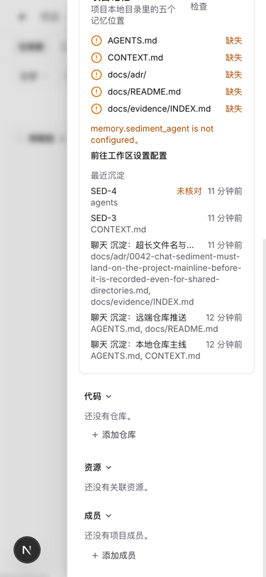
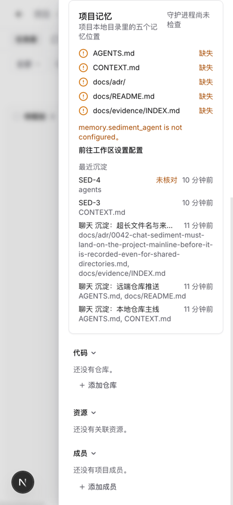
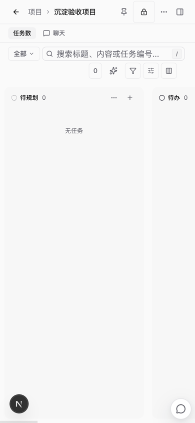
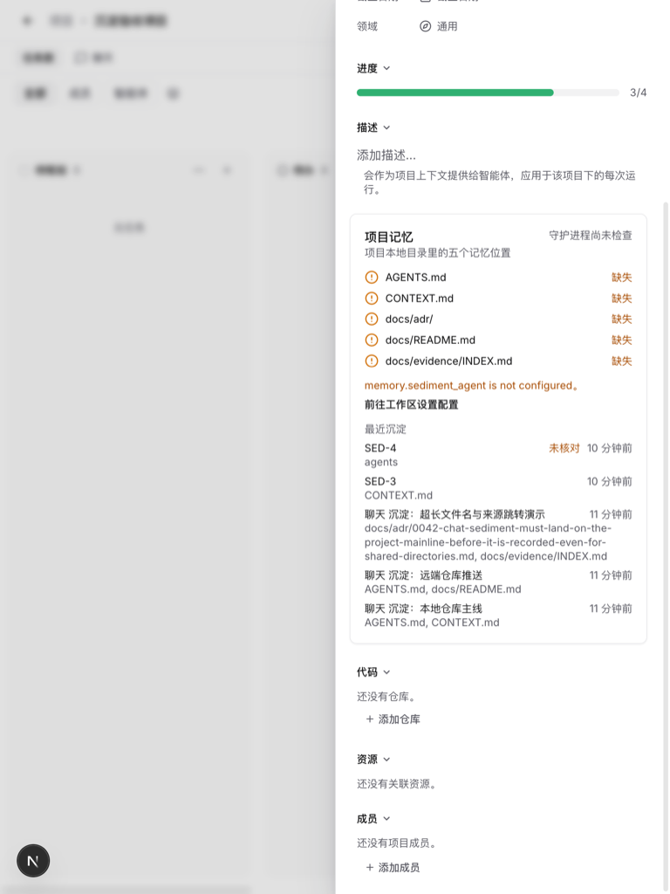
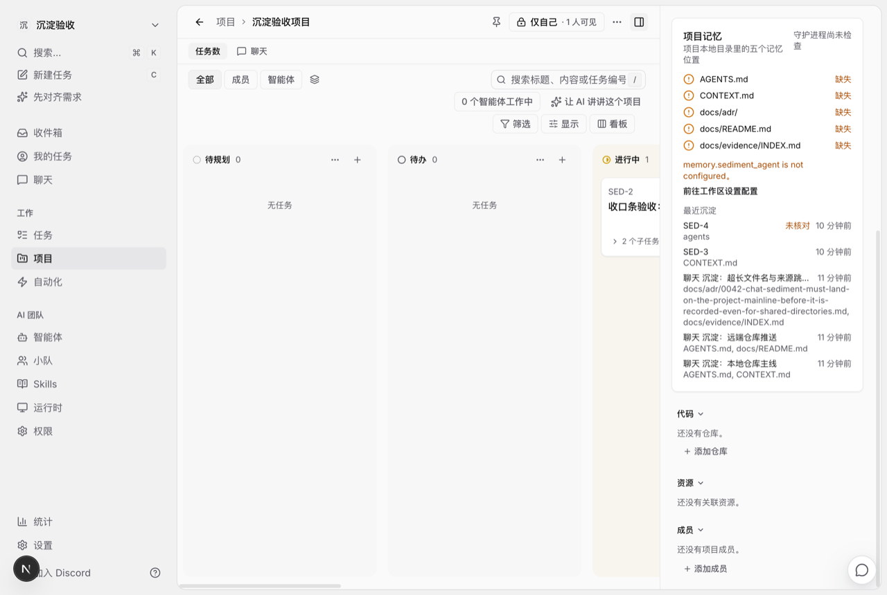
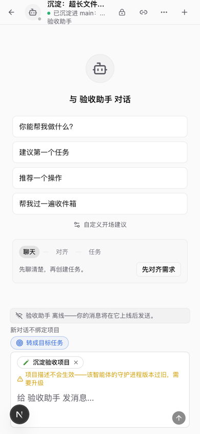
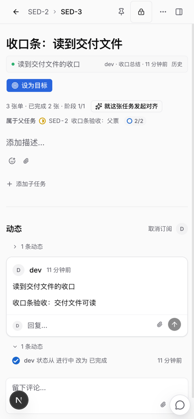
父票 SED-2 的子任务列表：SED-3 显示「知识：CONTEXT.md」（实际写入的文件），SED-4 显示「知识：agents（未核对交付）」；四档都不溢出。
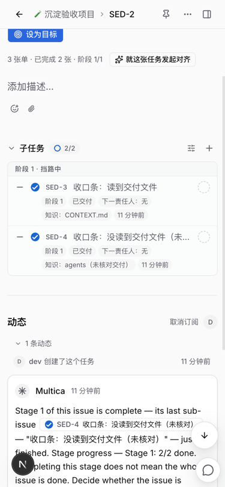
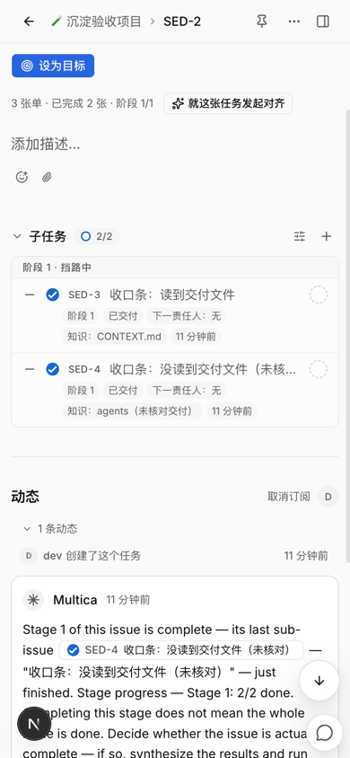
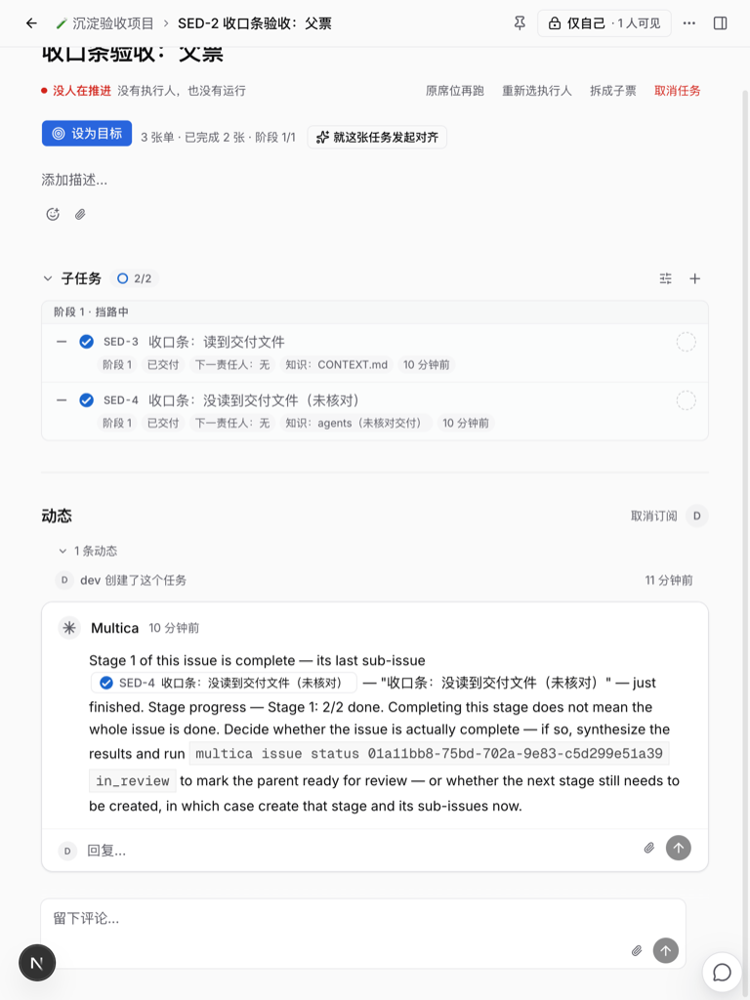
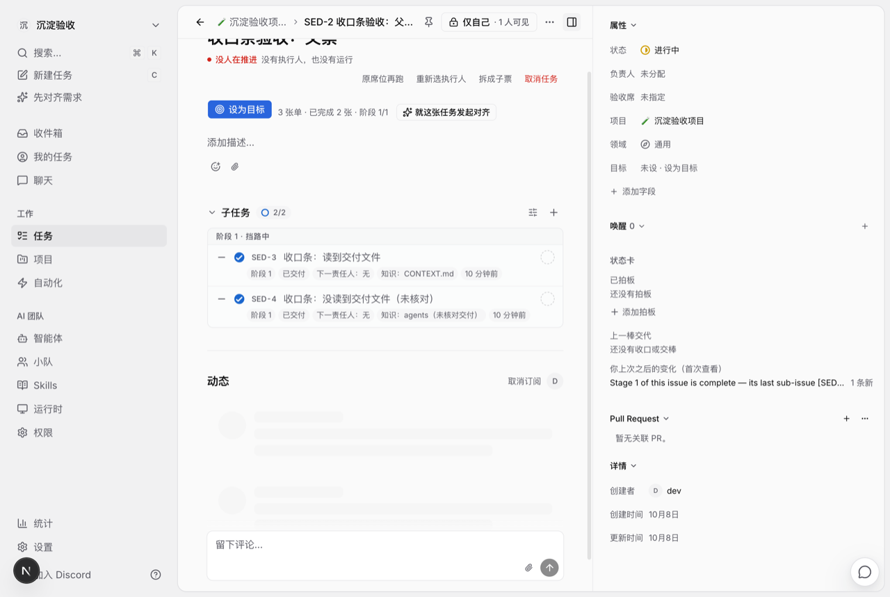
packages/views 共享组件，Desktop 走同一个项目详情页与任务详情页，入口相同，这里用 Web 实页代验。apps/mobile 没有项目记忆卡片和子票收口条这一屏，沿用 PR #587 的说明。验收完执行 make destroy（停 api/web、删本环境数据库、释放槽位），临时目录里的测试仓库一并删除。